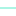

<!doctype html>
<html lang="en">
    <head>
        <meta charset="utf-8">
        <meta http-equiv="X-UA-Compatible" content="IE=edge">
        <meta name="viewport" content="initial-scale=1,user-scalable=no,maximum-scale=1,width=device-width">
        <meta name="mobile-web-app-capable" content="yes">
        <meta name="apple-mobile-web-app-capable" content="yes">
        <link rel="stylesheet" href="css/leaflet.css">
        <link rel="stylesheet" href="css/L.Control.Layers.Tree.css">
        <link rel="stylesheet" href="css/L.Control.Locate.min.css">
        <link rel="stylesheet" href="css/qgis2web.css">
        <link rel="stylesheet" href="css/fontawesome-all.min.css">
        <link rel="stylesheet" href="css/leaflet.photon.css">
        <link href="https://fonts.googleapis.com/css2?family=Montserrat:wght@400;700&display=swap" rel="stylesheet">
        <style>
        html, body, #map {
            width: 100%;
            height: 100%;
            padding: 0;
            margin: 0;
        }
        </style>
        <title></title>
    </head>
    <body>
        <div id="map">
        </div>
        <script src="js/qgis2web_expressions.js"></script>
        <script src="js/leaflet.js"></script>
        <script src="js/L.Control.Layers.Tree.min.js"></script>
        <script src="js/L.Control.Locate.min.js"></script>
        <script src="js/leaflet.rotatedMarker.js"></script>
        <script src="js/leaflet.pattern.js"></script>
        <script src="js/leaflet-hash.js"></script>
        <script src="js/Autolinker.min.js"></script>
        <script src="js/rbush.min.js"></script>
        <script src="js/labelgun.min.js"></script>
        <script src="js/labels.js"></script>
        <script src="js/leaflet.photon.js"></script>
        <script src="data/ContourMapofLagosstate_3.js"></script>
        <script src="data/Lagosstateboundary_5.js"></script>
        <script>
        var highlightLayer;
        function highlightFeature(e) {
            highlightLayer = e.target;

            if (e.target.feature.geometry.type === 'LineString' || e.target.feature.geometry.type === 'MultiLineString') {
              highlightLayer.setStyle({
                color: '#ffff00',
              });
            } else {
              highlightLayer.setStyle({
                fillColor: '#ffff00',
                fillOpacity: 1
              });
            }
        }
        var map = L.map('map', {
            zoomControl:false, maxZoom:28, minZoom:1
        }).fitBounds([[5.651622119040374,1.935845531348108],[7.1204076527661195,4.45591892774018]]);
        var hash = new L.Hash(map);
        map.attributionControl.setPrefix('<a href="https://github.com/tomchadwin/qgis2web" target="_blank">qgis2web</a> &middot; <a href="https://leafletjs.com" title="A JS library for interactive maps">Leaflet</a> &middot; <a href="https://qgis.org">QGIS</a>');
        var autolinker = new Autolinker({truncate: {length: 30, location: 'smart'}});
        // remove popup's row if "visible-with-data"
        function removeEmptyRowsFromPopupContent(content, feature) {
         var tempDiv = document.createElement('div');
         tempDiv.innerHTML = content;
         var rows = tempDiv.querySelectorAll('tr');
         for (var i = 0; i < rows.length; i++) {
             var td = rows[i].querySelector('td.visible-with-data');
             var key = td ? td.id : '';
             if (td && td.classList.contains('visible-with-data') && feature.properties[key] == null) {
                 rows[i].parentNode.removeChild(rows[i]);
             }
         }
         return tempDiv.innerHTML;
        }
        // add class to format popup if it contains media
		function addClassToPopupIfMedia(content, popup) {
			var tempDiv = document.createElement('div');
			tempDiv.innerHTML = content;
			if (tempDiv.querySelector('td img')) {
				popup._contentNode.classList.add('media');
					// Delay to force the redraw
					setTimeout(function() {
						popup.update();
					}, 10);
			} else {
				popup._contentNode.classList.remove('media');
			}
		}
        var zoomControl = L.control.zoom({
            position: 'topleft'
        }).addTo(map);
        L.control.locate({locateOptions: {maxZoom: 19}}).addTo(map);
        var bounds_group = new L.featureGroup([]);
        function setBounds() {
        }
        map.createPane('pane_GoogleSatellite_0');
        map.getPane('pane_GoogleSatellite_0').style.zIndex = 400;
        var layer_GoogleSatellite_0 = L.tileLayer('https://mt1.google.com/vt/lyrs=s&x={x}&y={y}&z={z}', {
            pane: 'pane_GoogleSatellite_0',
            opacity: 1.0,
            attribution: '<a href="https://www.google.at/permissions/geoguidelines/attr-guide.html">Map data ©2015 Google</a>',
            minZoom: 1,
            maxZoom: 28,
            minNativeZoom: 0,
            maxNativeZoom: 20
        });
        layer_GoogleSatellite_0;
        map.addLayer(layer_GoogleSatellite_0);
        map.createPane('pane_GoogleRoad_1');
        map.getPane('pane_GoogleRoad_1').style.zIndex = 401;
        var layer_GoogleRoad_1 = L.tileLayer('https://mt1.google.com/vt/lyrs=m&x={x}&y={y}&z={z}', {
            pane: 'pane_GoogleRoad_1',
            opacity: 1.0,
            attribution: '<a href="https://www.google.at/permissions/geoguidelines/attr-guide.html">Map data ©2015 Google</a>',
            minZoom: 1,
            maxZoom: 28,
            minNativeZoom: 0,
            maxNativeZoom: 20
        });
        layer_GoogleRoad_1;
        map.addLayer(layer_GoogleRoad_1);
        map.createPane('pane_LagosStateDEMtif_2');
        map.getPane('pane_LagosStateDEMtif_2').style.zIndex = 402;
        var img_LagosStateDEMtif_2 = 'data/LagosStateDEMtif_2.png';
        var img_bounds_LagosStateDEMtif_2 = [[6.363472222215115,2.6954166666908748],[6.7176388888818295,4.373472222246653]];
        var layer_LagosStateDEMtif_2 = new L.imageOverlay(img_LagosStateDEMtif_2,
                                              img_bounds_LagosStateDEMtif_2,
                                              {pane: 'pane_LagosStateDEMtif_2'});
        bounds_group.addLayer(layer_LagosStateDEMtif_2);
        map.addLayer(layer_LagosStateDEMtif_2);
        function pop_ContourMapofLagosstate_3(feature, layer) {
            layer.on({
                mouseout: function(e) {
                    for (var i in e.target._eventParents) {
                        if (typeof e.target._eventParents[i].resetStyle === 'function') {
                            e.target._eventParents[i].resetStyle(e.target);
                        }
                    }
                },
                mouseover: highlightFeature,
            });
            var popupContent = '<div style="font-family:Montserrat, sans-serif;">' + '<table>\
                    <tr>\
                        <th scope="row" style="padding-right: 30px;">Elevation (metres)</th>\
                        <td class="visible-with-data" id="ELEVATION">' + (feature.properties['ELEVATION'] !== null ? autolinker.link(String(feature.properties['ELEVATION']).replace(/'/g, '\'').toLocaleString()) : '') + '</td>\
                    </tr>\
                </table>';
            var content = removeEmptyRowsFromPopupContent(popupContent, feature);
			layer.on('popupopen', function(e) {
				addClassToPopupIfMedia(content, e.popup);
			});
			layer.bindPopup(content, { maxHeight: 400 });
        }

        function style_ContourMapofLagosstate_3_0(feature) {
            if (feature.properties['ELEVATION'] >= -15.000000 && feature.properties['ELEVATION'] <= 0.000000 ) {
                return {
                pane: 'pane_ContourMapofLagosstate_3',
                opacity: 1,
                color: 'rgba(48,18,59,1.0)',
                dashArray: '',
                lineCap: 'square',
                lineJoin: 'bevel',
                weight: 1.0,
                fillOpacity: 0,
                interactive: true,
            }
            }
            if (feature.properties['ELEVATION'] >= 0.000000 && feature.properties['ELEVATION'] <= 20.000000 ) {
                return {
                pane: 'pane_ContourMapofLagosstate_3',
                opacity: 1,
                color: 'rgba(70,134,251,1.0)',
                dashArray: '',
                lineCap: 'square',
                lineJoin: 'bevel',
                weight: 1.0,
                fillOpacity: 0,
                interactive: true,
            }
            }
            if (feature.properties['ELEVATION'] >= 21.000000 && feature.properties['ELEVATION'] <= 40.000000 ) {
                return {
                pane: 'pane_ContourMapofLagosstate_3',
                opacity: 1,
                color: 'rgba(27,229,181,1.0)',
                dashArray: '',
                lineCap: 'square',
                lineJoin: 'bevel',
                weight: 1.0,
                fillOpacity: 0,
                interactive: true,
            }
            }
            if (feature.properties['ELEVATION'] >= 41.000000 && feature.properties['ELEVATION'] <= 60.000000 ) {
                return {
                pane: 'pane_ContourMapofLagosstate_3',
                opacity: 1,
                color: 'rgba(164,252,60,1.0)',
                dashArray: '',
                lineCap: 'square',
                lineJoin: 'bevel',
                weight: 1.0,
                fillOpacity: 0,
                interactive: true,
            }
            }
            if (feature.properties['ELEVATION'] >= 61.000000 && feature.properties['ELEVATION'] <= 80.000000 ) {
                return {
                pane: 'pane_ContourMapofLagosstate_3',
                opacity: 1,
                color: 'rgba(251,185,56,1.0)',
                dashArray: '',
                lineCap: 'square',
                lineJoin: 'bevel',
                weight: 1.0,
                fillOpacity: 0,
                interactive: true,
            }
            }
            if (feature.properties['ELEVATION'] >= 81.000000 && feature.properties['ELEVATION'] <= 100.000000 ) {
                return {
                pane: 'pane_ContourMapofLagosstate_3',
                opacity: 1,
                color: 'rgba(227,68,10,1.0)',
                dashArray: '',
                lineCap: 'square',
                lineJoin: 'bevel',
                weight: 1.0,
                fillOpacity: 0,
                interactive: true,
            }
            }
            if (feature.properties['ELEVATION'] >= 101.000000 && feature.properties['ELEVATION'] <= 105.000000 ) {
                return {
                pane: 'pane_ContourMapofLagosstate_3',
                opacity: 1,
                color: 'rgba(122,4,3,1.0)',
                dashArray: '',
                lineCap: 'square',
                lineJoin: 'bevel',
                weight: 1.0,
                fillOpacity: 0,
                interactive: true,
            }
            }
        }
        map.createPane('pane_ContourMapofLagosstate_3');
        map.getPane('pane_ContourMapofLagosstate_3').style.zIndex = 403;
        map.getPane('pane_ContourMapofLagosstate_3').style['mix-blend-mode'] = 'normal';
        var layer_ContourMapofLagosstate_3 = new L.geoJson(json_ContourMapofLagosstate_3, {
            attribution: '',
            interactive: true,
            dataVar: 'json_ContourMapofLagosstate_3',
            layerName: 'layer_ContourMapofLagosstate_3',
            pane: 'pane_ContourMapofLagosstate_3',
            onEachFeature: pop_ContourMapofLagosstate_3,
            style: style_ContourMapofLagosstate_3_0,
        });
        bounds_group.addLayer(layer_ContourMapofLagosstate_3);
        map.addLayer(layer_ContourMapofLagosstate_3);
        map.createPane('pane_GoogleLabels_4');
        map.getPane('pane_GoogleLabels_4').style.zIndex = 404;
        var layer_GoogleLabels_4 = L.tileLayer('https://mt1.google.com/vt/lyrs=h&x={x}&y={y}&z={z}', {
            pane: 'pane_GoogleLabels_4',
            opacity: 1.0,
            attribution: '<a href="https://www.google.at/permissions/geoguidelines/attr-guide.html">Map data ©2015 Google</a>',
            minZoom: 1,
            maxZoom: 28,
            minNativeZoom: 0,
            maxNativeZoom: 20
        });
        layer_GoogleLabels_4;
        map.addLayer(layer_GoogleLabels_4);
        function pop_Lagosstateboundary_5(feature, layer) {
            layer.on({
                mouseout: function(e) {
                    for (var i in e.target._eventParents) {
                        if (typeof e.target._eventParents[i].resetStyle === 'function') {
                            e.target._eventParents[i].resetStyle(e.target);
                        }
                    }
                },
                mouseover: highlightFeature,
            });
            var popupContent = '<table>\
                    <tr>\
                        <td colspan="2">' + (feature.properties['id'] !== null ? autolinker.link(String(feature.properties['id']).replace(/'/g, '\'').toLocaleString()) : '') + '</td>\
                    </tr>\
                </table>';
            var content = removeEmptyRowsFromPopupContent(popupContent, feature);
			layer.on('popupopen', function(e) {
				addClassToPopupIfMedia(content, e.popup);
			});
			layer.bindPopup(content, { maxHeight: 400 });
        }

        function style_Lagosstateboundary_5_0() {
            return {
                pane: 'pane_Lagosstateboundary_5',
                opacity: 1,
                color: 'rgba(227,26,28,1.0)',
                dashArray: '',
                lineCap: 'round',
                lineJoin: 'round',
                weight: 7.0,
                fillOpacity: 0,
                interactive: false,
            }
        }
        map.createPane('pane_Lagosstateboundary_5');
        map.getPane('pane_Lagosstateboundary_5').style.zIndex = 405;
        map.getPane('pane_Lagosstateboundary_5').style['mix-blend-mode'] = 'normal';
        var layer_Lagosstateboundary_5 = new L.geoJson(json_Lagosstateboundary_5, {
            attribution: '',
            interactive: false,
            dataVar: 'json_Lagosstateboundary_5',
            layerName: 'layer_Lagosstateboundary_5',
            pane: 'pane_Lagosstateboundary_5',
            onEachFeature: pop_Lagosstateboundary_5,
            style: style_Lagosstateboundary_5_0,
        });
        bounds_group.addLayer(layer_Lagosstateboundary_5);
        map.addLayer(layer_Lagosstateboundary_5);
        const url = {"Nominatim OSM": "https://nominatim.openstreetmap.org/search?format=geojson&addressdetails=1&",
        "France BAN": "https://api-adresse.data.gouv.fr/search/?"}
        var photonControl = L.control.photon({
            url: url["Nominatim OSM"],
            feedbackLabel: '',
            position: 'topleft',
            includePosition: true,
            initial: true,
            // resultsHandler: myHandler,
        }).addTo(map);
        photonControl._container.childNodes[0].style.borderRadius="10px"
        // Create a variable to store the geoJSON data
        var x = null;
        // Create a variable to store the marker
        var marker = null;
        // Add an event listener to the Photon control to create a marker from the returned geoJSON data
        var z = null;
        photonControl.on('selected', function(e) {
            console.log(photonControl.search.resultsContainer);
            if (x != null) {
                map.removeLayer(obj3.marker);
                map.removeLayer(x);
            }
            obj2.gcd = e.choice;
            x = L.geoJSON(obj2.gcd).addTo(map);
            var label = typeof obj2.gcd.properties.label === 'undefined' ? obj2.gcd.properties.display_name : obj2.gcd.properties.label;
            obj3.marker = L.marker(x.getLayers()[0].getLatLng()).bindPopup(label).addTo(map);
            map.setView(x.getLayers()[0].getLatLng(), 17);
            z = typeof e.choice.properties.label === 'undefined'? e.choice.properties.display_name : e.choice.properties.label;
            console.log(e);
            e.target.input.value = z;
        });
        var search = document.getElementsByClassName("leaflet-photon leaflet-control")[0];
        search.classList.add("leaflet-control-search")
        search.style.display = "flex";
        search.style.backgroundColor="rgba(255,255,255,0.5)" 

        // Create the new button element
        var button = document.createElement("div");
        button.id = "gcd-button-control";
        button.className = "gcd-gl-btn fa fa-search search-button";

        // Insert the button at the beginning of the search control
        search.insertBefore(button, search.firstChild);
        last = search.lastChild;
        last.style.display = "none";
        button.addEventListener("click", function (e) {
            if (last.style.display === "none") {
                last.style.display = "block";
            } else {
                last.style.display = "none";
            }
        });
        var overlaysTree = [
            {label: ' Lagos state boundary', layer: layer_Lagosstateboundary_5},
            {label: "Google Labels", layer: layer_GoogleLabels_4},
            {label: 'Contour Map of Lagos state<br /><table><tr><td style="text-align: center;"></td><td>-15 - 0</td></tr><tr><td style="text-align: center;"></td><td>0 - 20</td></tr><tr><td style="text-align: center;"></td><td>21 - 40</td></tr><tr><td style="text-align: center;"></td><td>41 - 60</td></tr><tr><td style="text-align: center;"></td><td>61 - 80</td></tr><tr><td style="text-align: center;"></td><td>81 - 100</td></tr><tr><td style="text-align: center;"></td><td>101 - 105</td></tr></table>', layer: layer_ContourMapofLagosstate_3},
            {label: "Lagos State DEM.tif", layer: layer_LagosStateDEMtif_2},
            {label: "Google Road", layer: layer_GoogleRoad_1},
            {label: "Google Satellite", layer: layer_GoogleSatellite_0, radioGroup: 'bm' },]
        var lay = L.control.layers.tree(null, overlaysTree,{
            //namedToggle: true,
            //selectorBack: false,
            //closedSymbol: '&#8862; &#x1f5c0;',
            //openedSymbol: '&#8863; &#x1f5c1;',
            //collapseAll: 'Collapse all',
            //expandAll: 'Expand all',
            collapsed: true,
        });
        lay.addTo(map);
        setBounds();
        L.ImageOverlay.include({
            getBounds: function () {
                return this._bounds;
            }
        });
        </script>
    </body>
</html>
